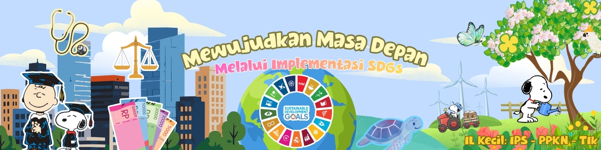
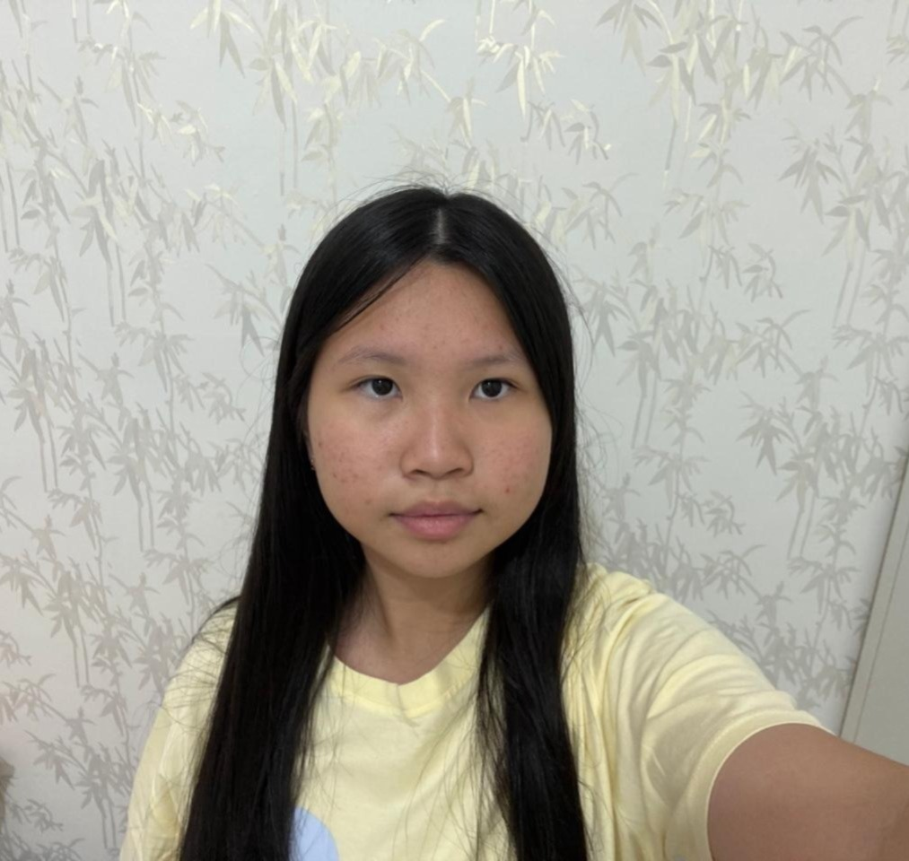

Saya membuat website ini sebagai bagian dari tugas IL Kecil WEB, yaitu proyek kolaborasi dari mata pelajaran PPKN, IPS, dan TIK. Website ini juga memberikan informasi mengenai pentingnya menjaga kelestarian lingkungan (SDGs 15) serta meningkatkan kesehatan dan kesejahteraan masyarakat (SDGs 3). Website ini dibuat untuk meningkatkan kesadaran tentang pentingnya melindungi hutan, tumbuhan, hewan, dan keanekaragaman hayati, sekaligus mengajak masyarakat menjaga kesehatan melalui lingkungan yang bersih dan sehat.